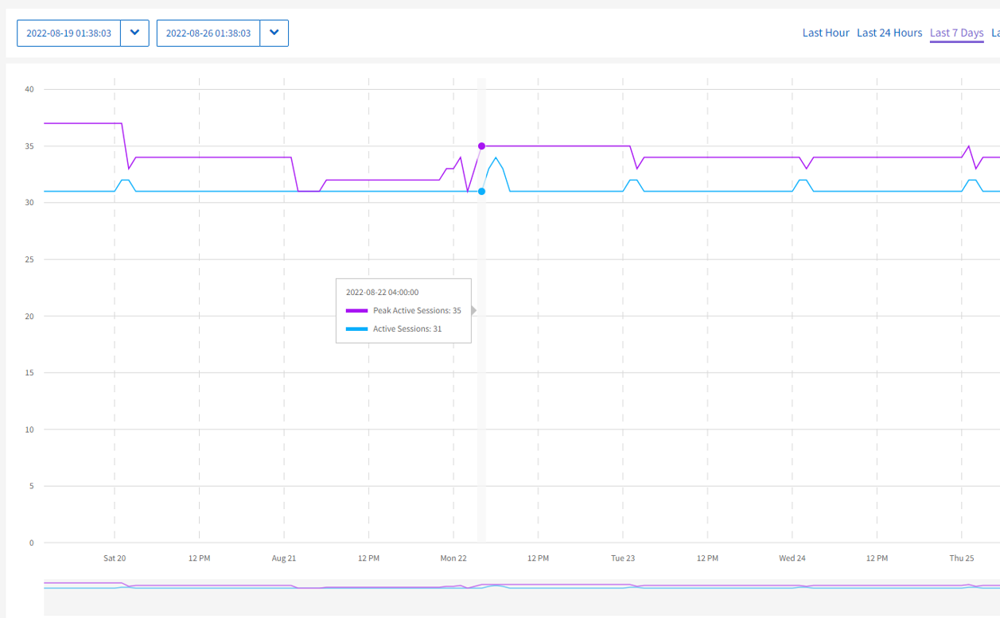

문서 변경 요청
문서 변경 요청 이 페이지 편집
이 페이지 편집 기여하는 방법 자세히 알아보기
기여하는 방법 자세히 알아보기선택한 클러스터에 대한 보고 옵션
기여자
측면 패널의 * Reporting * 드롭다운 메뉴에 대해 자세히 알아보십시오.
* * * * log * * * Sessions * Networks * Collection
용량
선택한 클러스터에 대한 * Reporting * 드롭다운 메뉴의 * Capacity * 페이지에서 볼륨에 프로비저닝된 전체 클러스터 공간에 대한 세부 정보를 볼 수 있습니다. 용량 정보 막대는 클러스터의 블록 및 메타데이터 스토리지 용량에 대한 현재 상태와 예측을 제공합니다. 해당 그래프는 클러스터 데이터를 분석하는 추가 방법을 제공합니다.

|
심각도 레벨 및 클러스터 충만성에 대한 자세한 내용은 을 참조하십시오 "Element 소프트웨어 설명서". |
다음 설명은 선택한 클러스터의 블록 용량, 메타데이터 용량 및 프로비저닝된 공간에 대한 세부 정보를 제공합니다.
| 블록 용량 | ||
|---|---|---|
제목 |
설명 |
예측 |
사용된 용량 |
클러스터 블록의 현재 사용 용량입니다. |
해당 없음 |
경고 임계값 |
현재 경고 임계값입니다. |
경고 임계값에 도달할 때를 예측합니다. |
오류 임계값 |
현재 오류 임계값입니다. |
오류 임계값에 도달할 때를 예측합니다. |
총 용량 |
블록의 총 용량입니다. |
임계 임계값에 도달할 때를 예측합니다. |
현재 상태 |
블럭의 현재 상태. |
심각도 수준에 대한 자세한 내용은 을 참조하십시오 "Element 소프트웨어 설명서". |
메타데이터 용량입니다 |
||
제목 |
설명 |
|
사용된 용량 |
이 클러스터에 사용된 메타데이터 클러스터 용량입니다. |
총 용량 |
이 클러스터에 사용 가능한 총 메타데이터 용량 및 중요 임계값 예측 |
현재 상태 |
이 클러스터에 대한 메타데이터 용량의 현재 상태입니다. |
프로비저닝된 공간 |
||
제목 |
설명 |
|
프로비저닝된 공간 |
현재 클러스터에 프로비저닝된 공간의 양입니다. |
최대 프로비저닝된 공간 |
효율성
선택한 클러스터에 대한 클러스터 * 보고 * 드롭다운 메뉴의 * 효율성 * 페이지에서 그래프의 데이터 포인트 위로 마우스 포인터를 이동하면 클러스터의 씬 프로비저닝, 중복 제거 및 압축에 대한 세부 정보를 볼 수 있습니다.
|
|
모든 결합된 효율성은 보고된 계수 값의 단순한 곱셈을 통해 계산됩니다. |
다음 설명은 선택한 클러스터의 효율성을 계산한 세부 정보입니다.
| 제목 | 설명 |
|---|---|
전반적인 효율성 |
씬 프로비저닝, 중복제거, 압축의 글로벌 효율성이 함께 배가됩니다. 이 계산에서는 시스템에 내장된 이중 나선형 피처를 고려하지 않습니다. |
중복제거 및 압축 |
중복제거 및 압축을 사용하여 공간을 절약할 수 있는 효과 |
씬 프로비저닝 |
이 기능을 사용하여 절약되는 공간의 크기입니다. 이 수치는 클러스터에 할당된 용량과 실제로 저장된 데이터 양 간의 델타를 반영합니다. |
중복 제거 |
클러스터에 중복 데이터를 저장하지 않고 저장한 공간의 비율 승수입니다. |
압축 |
데이터 압축이 클러스터에 저장된 데이터에 미치는 영향 데이터 유형마다 압축률이 다릅니다. 예를 들어 텍스트 데이터와 대부분의 문서는 작은 공간으로 쉽게 압축되지만 비디오 및 그래픽 이미지는 일반적으로 압축하지 않습니다. |
성능
선택한 클러스터에 대한 * Reporting * 드롭다운 메뉴의 * Performance * 페이지에서 범주를 선택하고 기간을 기준으로 필터링하여 IOPS 사용량, 처리량 및 클러스터 활용도에 대한 세부 정보를 볼 수 있습니다.
오류 로그
선택한 클러스터에 대한 * 보고 * 드롭다운 메뉴의 * 오류 로그 * 페이지에서 클러스터에서 보고된 해결되지 않았거나 해결된 오류에 대한 정보를 볼 수 있습니다. 이 정보는 필터링하여 CSV(쉼표로 구분된 값) 파일로 내보낼 수 있습니다. 심각도 수준에 대한 자세한 내용은 을 참조하십시오 "Element 소프트웨어 설명서".
선택한 클러스터에 대해 다음 정보가 보고됩니다.
| 제목 | 설명 |
|---|---|
ID입니다 |
클러스터 장애의 ID입니다. |
날짜 |
고장이 기록된 날짜 및 시간입니다. |
심각도입니다 |
이는 경고, 오류, 위험 또는 모범 사례일 수 있습니다. |
유형 |
노드, 드라이브, 클러스터, 서비스 또는 볼륨이 될 수 있습니다. |
노드 ID입니다 |
이 장애가 참조하는 노드의 노드 ID입니다. 노드 및 드라이브 장애에 대해 포함되며, 그렇지 않을 경우 -(대시)로 설정됩니다. |
노드 이름 |
시스템에서 생성된 노드 이름입니다. |
드라이브 ID입니다 |
이 결함이 참조하는 드라이브의 드라이브 ID입니다. 드라이브 고장에 대해 포함되며, 그렇지 않을 경우 -(대시)로 설정됩니다. |
간략 해제 |
오류의 원인이 해결되었는지 여부를 표시합니다. |
해결 시간 |
문제가 해결된 시간을 표시합니다. |
오류 코드 |
고장의 원인을 나타내는 설명 코드입니다. |
세부 정보 |
고장 설명 및 추가 세부 정보 |
이벤트
선택한 클러스터에 대한 * Reporting * 드롭다운 메뉴의 * Events * 페이지에서 클러스터에서 발생한 주요 이벤트에 대한 정보를 볼 수 있습니다. 이 정보는 필터링하여 CSV 파일로 내보낼 수 있습니다.
선택한 클러스터에 대해 다음 정보가 보고됩니다.
| 제목 | 설명 |
|---|---|
이벤트 ID입니다 |
각 이벤트와 연결된 고유 ID입니다. |
이벤트 시간 |
이벤트가 발생한 시간입니다. |
유형 |
로깅되는 이벤트 유형(예: API 이벤트 또는 클론 이벤트) 를 참조하십시오 "Element 소프트웨어 설명서" 를 참조하십시오. |
메시지 |
이벤트와 연결된 메시지입니다. |
서비스 ID입니다 |
이벤트를 보고한 서비스(해당하는 경우) |
노드 ID입니다 |
이벤트를 보고한 노드입니다(해당하는 경우). |
드라이브 ID입니다 |
이벤트를 보고한 드라이브입니다(해당하는 경우). |
세부 정보 |
이벤트가 발생한 이유를 식별하는 데 도움이 되는 정보입니다. |
경고
선택한 클러스터에 대한 * Reporting * 드롭다운 메뉴의 * Alerts * 페이지에서 미해결 또는 해결된 클러스터 경고를 볼 수 있습니다. 이 정보는 필터링하여 CSV 파일로 내보낼 수 있습니다. 심각도 수준에 대한 자세한 내용은 을 참조하십시오 "Element 소프트웨어 설명서".
선택한 클러스터에 대해 다음 정보가 보고됩니다.
| 제목 | 설명 |
|---|---|
트리거됨 |
클러스터 자체가 아닌 SolidFire Active IQ에서 경고가 트리거된 시간입니다. |
마지막 알림 |
가장 최근의 경고 이메일이 전송된 시간입니다. |
간략 해제 |
경고의 원인이 해결되었는지 여부를 표시합니다. |
정책 |
사용자 정의 알림 정책 이름입니다. |
심각도입니다 |
경고 정책이 생성된 시점에 할당된 심각도입니다. |
목적지 |
경고 이메일을 수신하기 위해 선택한 이메일 주소. |
트리거 |
알림을 트리거한 사용자 정의 설정입니다. |
iSCSI 세션
선택한 클러스터에 대한 * 보고 * 드롭다운 메뉴의 * iSCSI 세션 * 페이지에서 클러스터의 활성 세션 수와 클러스터에서 발생한 iSCSI 세션 수에 대한 세부 정보를 볼 수 있습니다.

그래프의 데이터 포인트 위로 마우스 포인터를 이동하면 정의된 기간의 세션 수를 확인할 수 있습니다.
-
Active Sessions(활성 세션): 클러스터에서 연결되어 활성 상태인 iSCSI 세션 수입니다.
-
Peak Active Sessions(최대 활성 세션): 지난 24시간 동안 클러스터에서 발생한 최대 iSCSI 세션 수입니다.
|
|
이 데이터에는 FC 노드에서 생성된 iSCSI 세션이 포함됩니다. |
가상 네트워크
선택한 클러스터에 대한 * 보고 * 드롭다운 메뉴의 * 가상 네트워크 * 페이지에서 클러스터에 구성된 가상 네트워크에 대한 다음 정보를 볼 수 있습니다.
| 제목 | 설명 |
|---|---|
ID입니다 |
VLAN 네트워크의 고유 ID입니다. 시스템에 의해 할당됩니다. |
이름 |
VLAN 네트워크의 고유한 사용자 할당 이름입니다. |
VLAN ID입니다 |
가상 네트워크가 생성될 때 할당된 VLAN 태그. |
VIP |
가상 네트워크에 할당된 스토리지 가상 IP 주소입니다. |
넷마스크 |
이 가상 네트워크의 넷마스크입니다. |
게이트웨이 |
가상 네트워크 게이트웨이의 고유 IP 주소입니다. VRF가 활성화되어 있어야 합니다. |
VRF 활성화 |
가상 라우팅 및 전달이 활성화되었는지 여부를 표시합니다. |
IPS 사용 |
가상 네트워크에 사용되는 가상 네트워크 IP 주소의 범위입니다. |
API 수집
선택한 클러스터에 대한 * Reporting * 드롭다운 메뉴의 * API Collection * 페이지에서 NetApp SolidFire Active IQ에서 사용하는 API 메소드를 볼 수 있습니다. 이러한 방법에 대한 자세한 설명은 를 참조하십시오 "Element 소프트웨어 API 설명서".
|
|
SolidFire Active IQ는 이러한 방법 외에도 NetApp 지원 및 엔지니어링에서 클러스터 상태를 모니터링하는 데 사용되는 일부 내부 API 호출을 합니다. 이러한 콜은 잘못 사용될 경우 클러스터 기능에 지장을 줄 수 있으므로 문서화되지 않습니다. SolidFire Active IQ API 컬렉션의 전체 목록이 필요한 경우 NetApp 지원에 문의해야 합니다. |